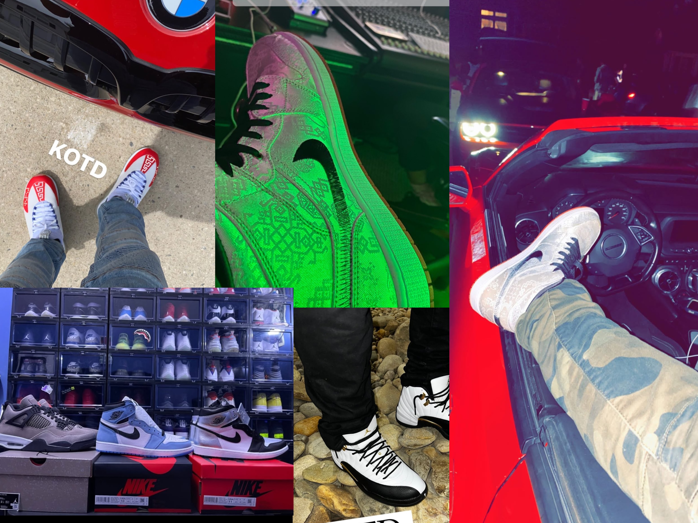

About This Site
This site serves as a portfolio of my personal collection, a visual journey tracing how a childhood admiration for footwear built a curated vault of my own.

About Me
My passion for sneakers started when I was in elementary school. Money was tight, so every back-to-school season came with just one pair of shoes for the entire year, always plain black or white so they'd match everything. During this time I would see all the different styles and colors, and when people put them on how it could transform the outfit from something simple to an art piece.
Years later that all changed the moment I got my first paycheck. Walking into the store and buying my own pair felt like turning a childhood dream into reality, and it was only the beginning. As hyped releases became harder to get, I leveraged my job working at the mall to get ahead of the crowds. I mastered sneaker apps using multiple accounts, frequently winning four or five pairs at a time. I kept the pairs I wanted and sold the extras, and before long, friends and coworkers were reaching out for help securing their own pair. At that point, I realized I was building a nice collection, and I was turning my passion for sneakers into a hustle. Who knew what began as a love for sneakers and a way to fund my collection quickly grew into a thriving business, connecting me with other collectors and giving me access to rare shoes.